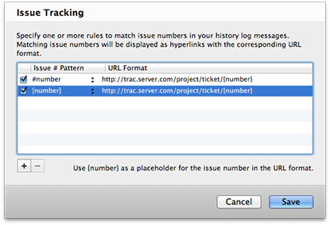

Cornerstone's issue tracking integration enables issue tracking numbers in log messages to be displayed as hyperlinks, linking to the issues' pages in your issue tracking system.
A set of rules can be defined which control how issue numbers are identified in log messages and the URLs in the issue tracking system which they should link to.
Each rule describes two things:
You can choose from a set of pre-defined patterns using a simplified syntax (e.g. #number, [number] etc.) or specify a custom regular expression.
The URL format is used to generate URLs for issue numbers. {number} is used as a placeholder for the issue number matched by the pre-defined patterns.
Matching issue numbers found in log messages are then displayed as hyperlinks, linking to the URL generated using the URL format associated with the pattern used to match the issue number.
The user can define any number of rules. This enables use of the feature in environments where:
An internal system for unit and integration testing
and:
You can define different rule sets for different repositories.
Select Issue Tracking… The issue tracking window is displayed:

Click the add button to add a new rule:
{number} as a placeholder for issue numbers matched by the pre-defined patterns.Trac is a very popular open-source issue tracking system which offers integration with Subversion.
To define a rule for matching Trac issue numbers:
Click the add button to add a new rule:
#number pre-defined pattern.Enter the URL of your Trac server as follows:
http://<server>/<project>/ticket/{number}
replacing <server> and <project> with values appropriate to your environment.
Custom number patterns are defined using Perl-compatible regular expressions. Ruby extensions such as named groups are also supported. Detailed information on the supported regular expression syntax can be found in the Regular Expression Syntax page of the Appendix.
When groups are used, the URL placeholder should specify the group's index or name in the format {index} or {name}.
For example, {0} is used to reference the entire matched text for custom regular expressions. {1} to {n} can be used to reference groups in the regular expression. Named groups are referenced using {name} where name is the name of the group.